Spectrum Monitoring
Receiving the radio spectrum around us with an ADALM-Pluto (AD9363) and GNU Radio 3.10: frequency axis and complex baseband, a loopback test with a known tone, band scans with Max Hold and waterfall, and identification of real signals. Every number and plot on this page is computed by JavaScript from the raw I/Q recordings — the same code can re-run in your browser.
Computed from the raw recordings
The 11 recordings were made with our recorder block (.cf32, complex64). The page loads results.json, produced by lab01-analysis.js in Node on …. Press the button to download the I/Q excerpts (… MB) and run exactly the same code here; the page then compares every checked value with the published one.
The analysis code is a line-by-line JavaScript port of our analysis/lab01_analysis.py; on the same samples both give identical numbers (noise floor, 99 % OBW, Bx, power, GSM offsets, loopback peaks).
Objectives, set-up and flowgraphs
- Run the Pluto’s direct-conversion I/Q receiver from GNU Radio, set frequency, sample rate and gain, and read the real settings back from the device.
- Use a known tone sent from the Pluto’s own transmitter over a loopback cable to test the frequency axis, positive/negative baseband frequencies and the display-centre artifact.
- Scan the bands of Table 6 with waterfall and Max Hold, identify real signals, measure their centre frequency and bandwidth and guess the technology from the spectral signature.
- Record raw I/Q with the standard name teamID_labNN_fc_fs_gain_timestamp.cf32 for the post-session analysis.
Safety rules used: TX attenuation ≥ 40 dB (60 dB default), RX gain ≤ 10 dB on the loopback cable and ≤ 30 dB on the antenna, no antenna on TX1.
| lab01_monitor | PlutoSDR Source (manual gain, Filter Configuration = Off, RF bandwidth 20 MHz) → Frequency / Waterfall / Time sinks + IQ Recorder. f_tune = int(fc + lo_shift), samp_rate chooser 2.6 / 5 / 10 / 20 MS/s, rec_sec = min(4, 80e6 / (8·fs)). |
|---|---|
| lab01_loopback | Same, plus Signal Source (complex cosine, f_tx, amplitude 0.5) → PlutoSDR Sink with LO = int(fc) (no lo_shift), tx_att 40…89 dB, rf_gain 0…10 dB. |
| Theory | Label of a bin: flabel = fc + fbb, −fs/2 ≤ fbb < fs/2, Δf = fs/N. Sweep step 0.8 fs (middle 80 % trusted). |
Recordings
… The browser analyses the first part of each file (last column), stored losslessly as 12-bit integers.
| File | Part | fc (MHz) | fs (MS/s) | Gain (dB) | Duration (s) | Samples N | Size = 8·N | Analysed |
|---|
Duration check: rec_sec limits every file to 80 MB, i.e. 3.846 s at 2.6 MS/s and 0.5 s at 20 MS/s — exactly what the full-length files show. Three loopback files are shorter (1.8–3.5 s) because the recording was stopped (or a setting changed, which closes the file) before rec_sec ran out. The files carry the placeholder team ID Team-XX because the team variable of the flowgraph was not changed to our team name (SDR) before the session; the names are kept exactly as recorded.
First spectrum: GSM900 downlink at 20 MS/s
fc = 945 MHz, 20 MS/s, gain 20 dB: almost the whole 935–955 MHz range in one view. Grey bands = untrusted outer 20 % of the display.
Two flat blocks about 4 MHz wide sit at … and … MHz — these are not GSM: their shape is analysed in question 8. Narrow 200 kHz GSM carriers appear above 951.5 MHz.
Known signal over the loopback cable
fc = 434 MHz, ftx = ±250 kHz, tx_att = 60 dB, rf_gain = 10 dB, 2.6 MS/s. The tone frequency is estimated with a 2²⁰-sample Hann window, zero-padded to 2²¹ points, plus parabolic interpolation — far finer than the display resolution fs/N.
| ftx | lo_shift | ftune (MHz) | Expected fc + ftx (MHz) | Measured (MHz) | Error | fs/N |
|---|
Largest error over all five recordings: … Hz — four orders of magnitude below the 2.5 kHz display resolution.
Strongest narrow peaks in this recording (fine frequency, level above the median of the zero-padded spectrum):
LO test (question 4)
Only the RX LO moves (ftune = fc + lo_shift); the transmitter stays at fc. Each peak is tracked across the four runs with ftx = +250 kHz and fitted with label = a + s · lo_shift for an integer slope s; a track must appear in every run.
Band scans
Welch average, Max Hold and the gap-free waterfall of every band recording (N = 1024, Blackman-Harris).
Receiver spurs at integer-MHz baseband offsets. The same lines appear at the same baseband offsets (±1, ±2, +6, ±8.98 MHz) in recordings made at 90, 945, 1089 and 1114 MHz. A real signal keeps its RF frequency when fc changes; these keep their offset from the LO, so they move with the LO (slope s = 1 in the language of question 4) and are made inside the receiver. In the 2.6 MS/s file the pair sits at fc ± 1.000000 MHz to within 2 Hz — an external transmitter would appear shifted by the Pluto’s reference error (≈ +28 kHz at 1090 MHz, see below).
Signal characteristics (Table 7)
Welch PSD (linear averaging), 99 % occupied bandwidth (ITU-R SM.443, 0.5 % each side, noise floor subtracted), power inside the 99 % band, and the manual’s x-dB bandwidth on the Max-Hold curve: x = 20 dB if the peak is ≥ 26 dB above the floor, otherwise 6 dB; fc,sig = (fL + fU)/2, Bx = fU − fL. N is chosen so that fs/N ≤ B/20.
| # | Band | fc 99 % (MHz) | B99 (kHz) | fc,sig (MHz) | Bx (kHz) | x | Peak − floor (dB) | Power (dBFS) | fs (MS/s) / Δf (kHz) | Behaviour and technology | I/Q file |
|---|
Blue band: 99 % OBW. Orange: peak − x level and the x-dB edges fL, fU. Grey curve: Max Hold (of 8-frame averages, like GNU Radio’s FFT averaging with Max Hold); a single-frame Max Hold of a 0.1 s excerpt is dominated by noise spikes. For the GSM carriers (only 15–17 dB above the floor) x = 6 dB and Bx follows the ragged top of the GMSK spectrum, so B99 is the reliable width here. Rows 5 and 6 are listed because they were examined during the session; they turned out to be receiver artifacts. The manual asks for one transient signal (remote at 433.92 MHz or a phone uplink): neither was recorded, see “what we would change”.
Wideband blocks: UMTS or LTE? (question 8, measured)
| Centre | B−3 dB (MHz) | B−12 dB (MHz) | B−3/B−12 | B99 (MHz) | Edge slope (dB/MHz) | Verdict |
|---|
Plateau = median PSD of the middle half of the 99 % band; edges where the PSD falls 3 and 12 dB below it (12 dB because the blocks are only ~18–22 dB above the floor). Both blocks are 3.8 MHz wide at −3 dB — the WCDMA chip rate (RRC, α = 0.22, 3.84 Mchip/s) — with rounded shoulders, while a 5 MHz LTE carrier would be flat over 4.5 MHz with nearly vertical edges. The two carriers are … MHz apart (centres from the 99 % edges, ±1 bin = ±20 kHz each), close to the nominal 5 MHz UMTS channel spacing: two adjacent UMTS900 carriers.
Reference-frequency error from the GSM grid
GSM900 downlink carriers sit on f = 935 + 0.2 n MHz and the base stations are accurate to 0.05 ppm, so the offset of each measured carrier centre from the grid is the Pluto’s own error: label = ftrue − ε·fc. Centres are power-weighted centroids over ±90 kHz (noise floor subtracted), iterated until they converge; only carriers inside the trusted 80 % are used.
| Measured centre (MHz) | Grid (MHz) | ARFCN n | Offset | Peak − floor |
|---|
The Pluto reads GSM carriers about 24 kHz too high, i.e. its 40 MHz reference runs slow by roughly 26 ppm — at the edge of the ±25 ppm specification of Table 2. Uncertainty: only two carriers fall inside the trusted part of the 20 MS/s recording (the third, at 954 MHz, is at the display edge and coincides with the receiver’s +8.98 MHz spur); the bin width is … kHz; the two offsets differ by 14 kHz, which is larger than the bin and points to the asymmetric, bursty GMSK spectra and the 0.1 s excerpt; oscillator warm-up adds a few ppm over a session. A 2.6 MS/s recording at 945 MHz with N = 8192 would cut the bin to 0.3 kHz.
Gap-free time analysis: is the 1090 MHz line ADS-B?
At 2.6 MS/s every sample reaches the laptop, so the recording can be cut into consecutive frames with no gaps. ADS-B (1090 MHz) is a stream of 120 µs pulse bursts and would stand out clearly from the floor.
In … consecutive … µs frames (1 s) the channel power never crosses the threshold (… dBFS): … bursts. Median …, 99th percentile …, maximum … dBFS — a steady CW line. Together with its exact fc + 1.000000 MHz position and its mirror at fc − 1 MHz, this is a receiver spur, not ADS-B; no aircraft transmission was received in this second. The same burst code is the one prepared for the 433.92 MHz remote (band B), which was not recorded in this session.
Services: predicted vs observed
| Predicted (pre-report, Table 3) | Seen? | Frequency | Width | Reason for the technology guess |
|---|---|---|---|---|
| FM broadcast 88–108 MHz | No | — | — | Only receiver spurs in the 80–100 MHz view; the GSM/LTE antenna is not resonant at 100 MHz (the manual warns stations look weaker). |
| Remote 433.92 MHz (OOK/FSK) | Not recorded | — | — | Band B was not captured; the loopback used the same band. |
| GSM900 downlink 935–960 MHz | Yes | 952.2, 952.8 MHz (ARFCN 86, 89) | …, … kHz (B99) | 200 kHz channels on the 200 kHz grid; both never switch off in the recording → BCCH carriers (n = (f − 935)/0.2 = 86 and 89). |
| GSM900 uplink 890–915 MHz | Not recorded | — | — | Needs a phone transmitting nearby; no file in this session. |
| UMTS / LTE in the 900 MHz band | Yes — UMTS | …, … MHz | … / … MHz at −3 dB | Continuous flat block, −3 dB width = WCDMA chip rate, rounded RRC edges (question 8). |
| ADS-B 1090 MHz (extra band) | No | — | — | The 1090.000 MHz line is continuous and exactly LO + 1 MHz: receiver spur. |
| Wi-Fi / Bluetooth 2.4 GHz (extra) | Screenshots only | 2400–2420 MHz | — | Horizontal streaks in the waterfall (short packets) — screenshots 6–8; no I/Q file. |
Prediction vs measurement
| Quantity | Predicted | Measured | Relative error | Quantified source of the difference |
|---|---|---|---|---|
| Loopback tone (+250 kHz, lo_shift 0) | 434.250000 MHz | … MHz | < 10⁻¹⁰ | … Hz; interpolation residual of the zero-padded FFT (bin 1.24 Hz). TX and RX share the reference, so its error cancels. |
| GSM carrier occupied width | ≈ 250 kHz | … / … kHz | … % / … % | Δf = 4.88 kHz (each edge ±1 bin = ±2 %); peak only 15–17 dB above the floor, so the 0.5 % tails are partly noise; 0.1 s excerpt; the neighbouring carrier 600 kHz away. |
| UMTS width at −3 dB | 3.84 MHz | … / … MHz | … % / … % | Δf = 19.5 kHz: each edge is quantised to ±0.5 % of the width. |
| UMTS 99 % width | ≤ 5 MHz channel | … / … MHz | — | Inside the channel; floor subtraction at 18–22 dB SNR removes part of the RRC skirts. |
| Reference error |ε| | ≤ 25 ppm | … ± … ppm | at the limit | Two carriers only, bin 4.88 kHz (5 ppm), 14 kHz spread between the two offsets. |
| File size, full recording | 8·fs·T = 80 000 000 B | 80 000 000 B | 0 | — |
| Trusted part of the display | 80 % of fs | … % (±1 dB), … % (±3 dB) | −15…−35 % | The floor already bends inside ±0.4 fs (question 1): Filter Configuration Off + decimation filter roll-off and aliased noise. |
Answers to the questions
Q1 · Edges versus the middle of the display
Near ±fs/2 the analog low-pass and the half-band/FIR decimation filters are in their transition band, strong signals just outside ±fs/2 alias onto the opposite edge (with Filter Configuration = Off the analog bandwidth stays at 20 MHz, wider than fs), and the Blackman-Harris main lobe mixes edge bins with folded ones. Measured from the noise floor of mostly empty recordings, the floor stays within ±1 dB of its centre value over … % of fs and within ±3 dB over … %:
| Recording | fs (MS/s) | ±1 dB | ±3 dB |
|---|
So the usable part is a bit narrower than the 80 % assumed by the sweep step 0.8 fs: for finding signals the 80 % rule is fine (a few dB of floor tilt), but levels read in the outer 20–40 % should not be compared with levels in the middle.
Q2 · Reference error from GSM carriers
From the raw file (analysis 4): carrier centres are … kHz above the 935 + 0.2 n MHz grid on average, ε = … ± … ppm, at the edge of the ±25 ppm (±23.6 kHz at 945 MHz) specification. The difference is several bins (Δf = 4.88 kHz at N = 4096, 20 MS/s), so it is resolved; the live readings of three carriers at N = 1024 were not written in the log book, so they cannot be compared here.
Q3 · Telling +250 kHz from −250 kHz
The samples are complex, x = I + jQ. A +250 kHz tone is e+j2π·250k·t (the phasor turns anticlockwise), a −250 kHz tone turns the other way; Q, 90° behind I, tells the direction, so the complex spectrum is not symmetric. Measured: ftx = +250 kHz appears at … MHz (right of the centre), −250 kHz at … MHz (left). With only I sampled the signal would be real, cos(2π·250k·t) = cos(−2π·250k·t): its spectrum is conjugate-symmetric, both cases would look identical (two peaks at ±250 kHz with half the power), RF frequencies fc ± 250 kHz would fold onto each other and the usable width would halve to fs/2.
Q4 · Classifying the peaks of the LO test
The measured slopes (table in Part 2) give three kinds of peak. s = 0: the tone at 434.250 MHz and a line at 434.000 MHz — the TX LO leakage, a real RF signal on the cable because the transmitter stays at fc while the receiver moves. s = 1: the line at the display centre (433.9 / 434.0 / 434.1 / 434.2 MHz) — receiver DC offset / LO leakage. s = ±4: two strong lines at 434.25 ± 4·lo_shift (up to … dB above the median) that merge with the tone when lo_shift = 0. They move with the LO, so by the manual’s criterion they are made inside the radio, but their slope is not one of the three textbook classes (0, 1, 2); the exact mixing mechanism is not identified. No s = 2 receiver image was found above the 25 dB detection threshold, i.e. the image is suppressed by more than ~58 dB relative to the tone. Note that at lo_shift = 0 the TX LO leakage and the RX centre artifact both fall on 434.000 MHz — only the LO test separates them.
Q5 · Why the loopback label is exact but GSM carriers are not
One 40 MHz reference makes both LO synthesizers and the sample clock. With an error ε the tone leaves at (1+ε)(fc + ftx), the RX LO is at (1+ε)fc, so baseband is (1+ε)ftx, and the sample clock is (1+ε)fs — the FFT reports (1+ε)ftx/(1+ε) = ftx. The error cancels: measured … Hz. GSM base stations have their own, far better references (≤ 0.05 ppm), so only the Pluto’s error remains: ≈ +24 kHz at 945 MHz.
Q6 · Continuous versus transient; what Max Hold shows
Band C had the most continuous signals: in every frame of the recording both UMTS carriers and both GSM carriers stay at least 3 dB above the noise power of their bandwidth (“on” in 100 % of the frames, Table 7) — as a GSM BCCH carrier must, since all its time slots are filled with dummy bursts. The 2.4 GHz band (screenshots 6–8) was the most transient: short packets show up as horizontal streaks in the waterfall. Max Hold keeps the maximum of every bin over time, so it (1) catches bursts that happened between two display updates, (2) shows their true peak level, which averaging pulls down, and (3) reveals the total occupied width of channels that were active at different times; the instantaneous trace shows a single N-sample frame per update.
Q7 · Remote bursts and the probability of interception
Band B was not recorded, so the live count cannot be checked against a gap-free file. Model: each display update (Tupd = 0.1 s) processes one frame of N = 1024 samples, TN = N/fs = 0.39 ms at 2.6 MS/s; a burst of length Tb is seen when it overlaps that frame, P ≈ min(1, (Tb + TN)/Tupd): 1.4 % for 1 ms, 10.4 % for 10 ms, 50 % for 50 ms, ≈ 100 % for ≥ 100 ms. A gap-free 2.6 MS/s file has P = 1 — the burst analysis above shows how it would be counted.
Q8 · UMTS or LTE without demodulating
UMTS: RRC (α = 0.22) on 3.84 Mchip/s → dome-shaped, B−3 dB ≈ 3.84 MHz, B−3/B−30 ≈ 0.82, uniform texture in the waterfall. LTE 5 MHz: 300 × 15 kHz subcarriers → flat 4.5 MHz with near-vertical edges (ratio ≈ 1), an empty DC subcarrier in the centre, 180 kHz × 1 ms resource blocks switching on and off in the waterfall, and a cyclic-prefix autocorrelation peak at the 66.7 µs symbol length. Procedure: fs ≥ 1.25 × 5 MHz, carrier mid-display, Welch + Max Hold, measure B−3 dB, a deeper width and the edge slope, look for the DC notch with Δf ≤ 5 kHz, then check the waterfall. Applied to our 945 MHz recording (table above), both blocks are UMTS.
What we would change next time
- Record band B during a remote press (434.5 MHz, 2.6 MS/s, full 3.8 s). Analysis 2 (gap-free bursts) and question 7 need it; the code is ready.
- Record 945 MHz at 2.6 MS/s with N = 8192 for the reference-error estimate: more GSM carriers inside the trusted 80 % and a 0.3 kHz bin instead of two carriers at 4.9 kHz.
- Fill in log.md during the session — device read-backs, the working gain, live readings of the GSM carriers and the live burst count. Without them, the live display cannot be compared with the files (questions 2 and 7).
- Run an LO test on a band recording (e.g. 1089 MHz with lo_shift = ±100 kHz) to show directly that the integer-MHz lines are receiver spurs, instead of inferring it across recordings with different fc.
- Record the 2.4 GHz scan and a phone uplink, not only screenshots, so that a transient signal can be measured for Table 7.
Analyse a recording in your browser
Choose a .cf32 (complex64) or .cs16 file. With a standard file name, fc and fs are read from the name. Nothing is uploaded — the file is read locally and analysed with the same code.
Live display screenshots
What the GNU Radio sinks showed during the session (Frequency Sink with Max Hold, Waterfall Sink).
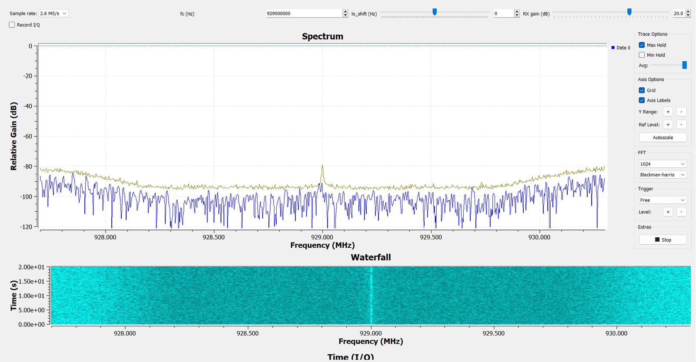
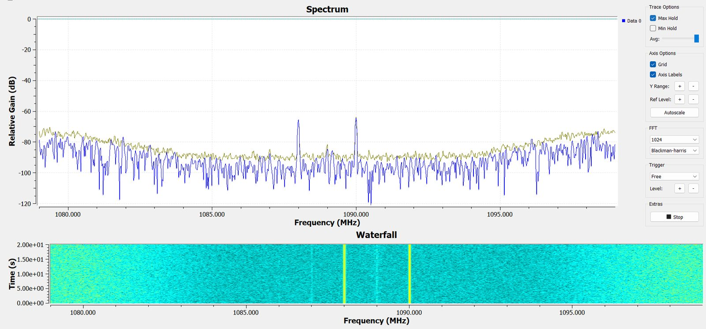
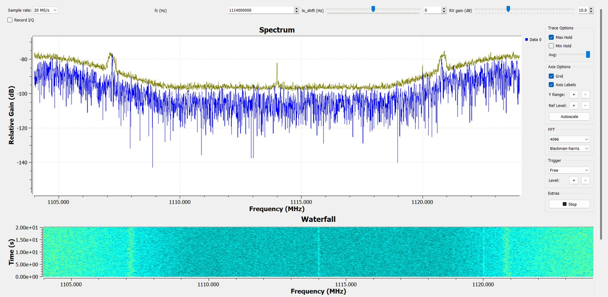
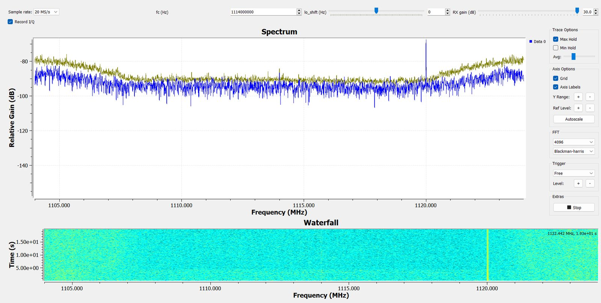
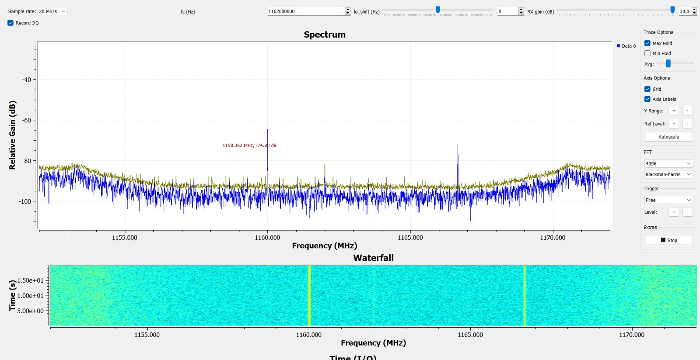
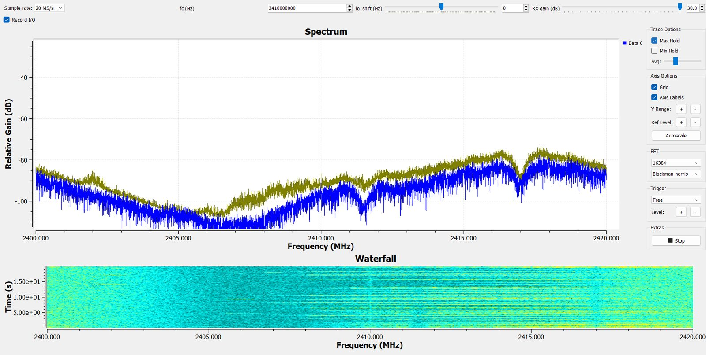
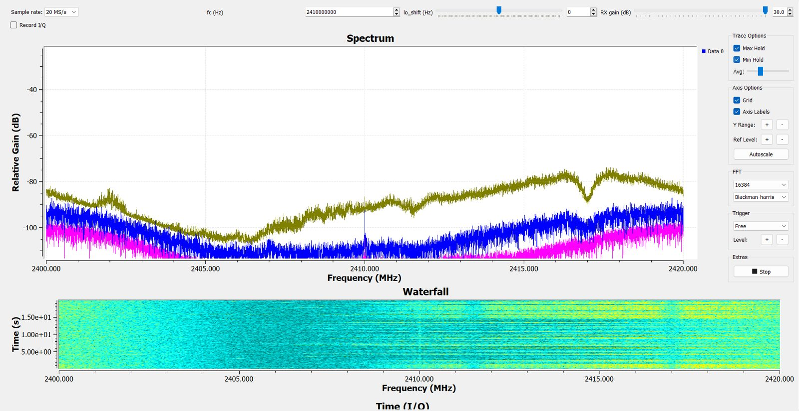
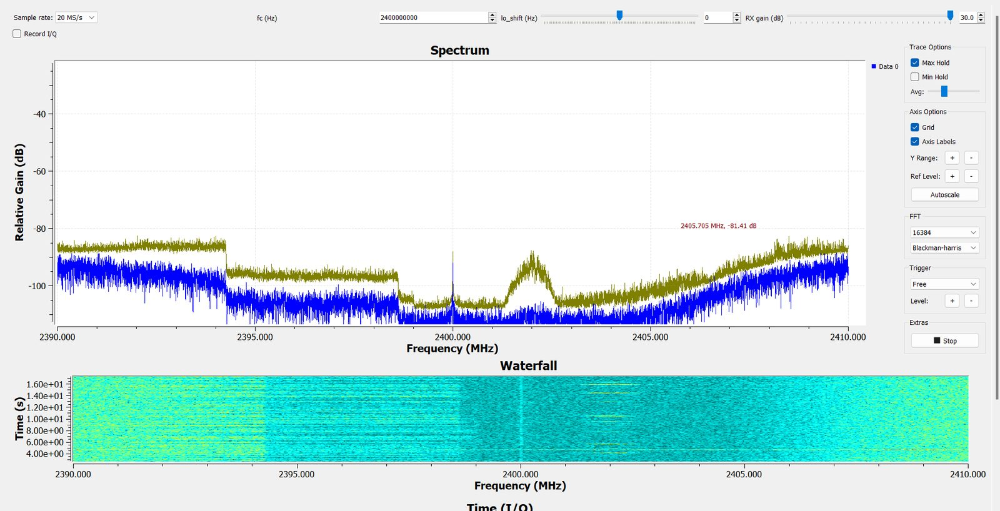
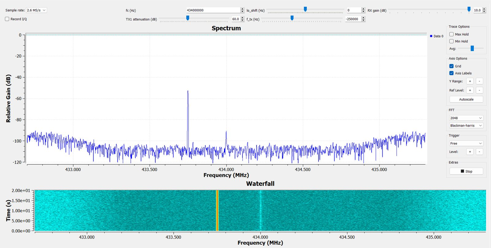
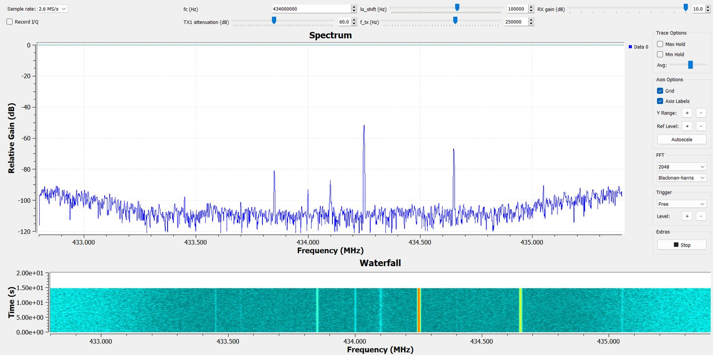
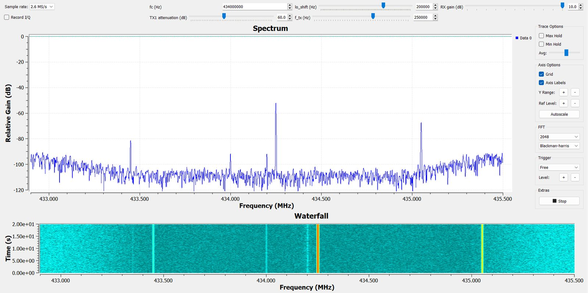
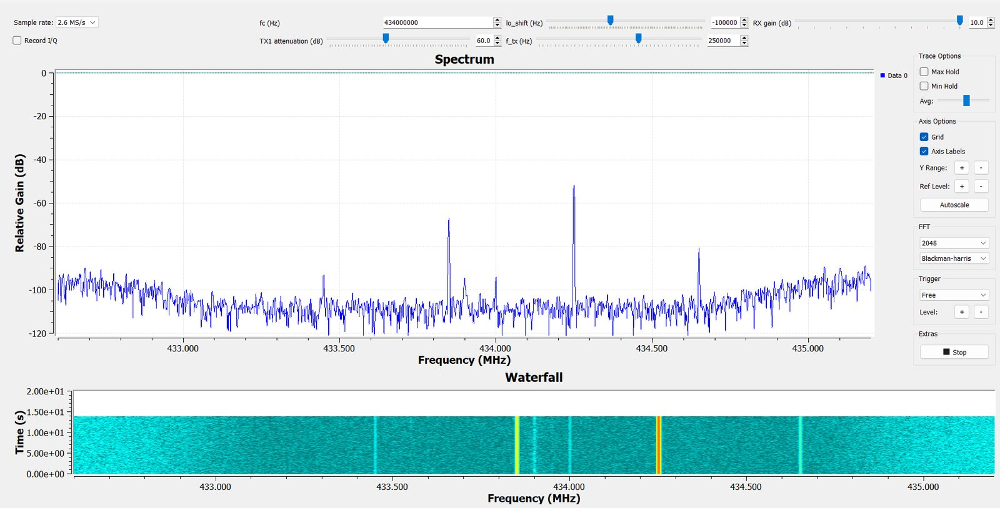
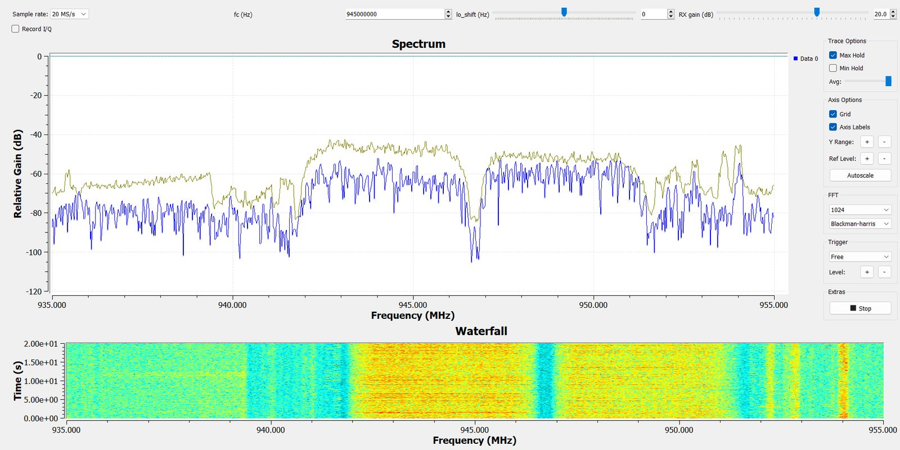
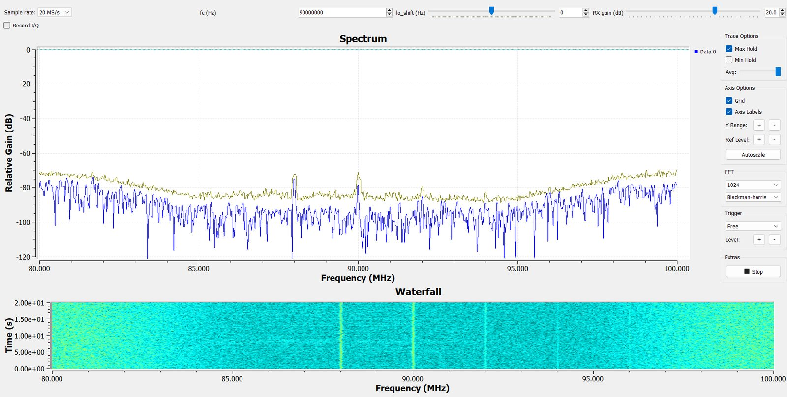
Code and data
- sdr-dsp.js — FFT, Welch, Max Hold, OBW, x-dB, bursts, fine peak, GSM grid (JS port of lab01_analysis.py)
- lab01-analysis.js — which measurement runs on which recording
- lab01.js — plots, tables, recompute and the file tool
- results.json · data/manifest.json
- GNU Radio flowgraphs, the IQ Recorder block and the Python analysis are in the Lab 1 files on the SDR Lab page.
- I/Q excerpts: data/*.cs16 — int16 little-endian, interleaved I/Q, value / 2048 = sample (lossless for the 12-bit AD9363). The full 80 MB recordings are kept by the team.